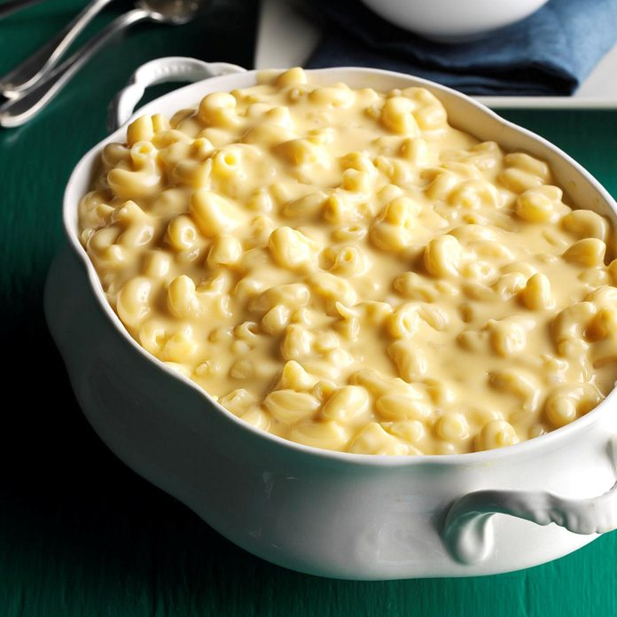

Mac N Cheese Recipie

Total Time:
Prep: 25 mins. Cook: 2 hours
Makes: 16 servings
Ingredients:
- 3 cups uncooked elbow macaroni
- 1 package (16 ounces) Velveeta, cubed
- 2 cups shredded Mexican cheese blend
- 2 cups shredded white cheddar cheese
- 1-3/4 cups whole milk
- 1 can (12 ounces) evaporated milk
- 3/4 cup butter, melted
- 3 large eggs, lightly beaten
Directions:
- Cook macaroni according to package directions for al dente; drain. Transfer to a greased 5-qt. slow cooker. Stir in remaining ingredients.
- Cook, covered, on low 2 to 2-1/2 hours or until a thermometer reads at least 160°, stirring once.
Nutritional Facts:
3/4 cup: 388 calories, 28g fat (17g saturated fat), 122mg cholesterol, 652mg sodium, 16g carbohydrate (6g sugars, 0 fiber), 17g protein.
Back to home page
See Recipie